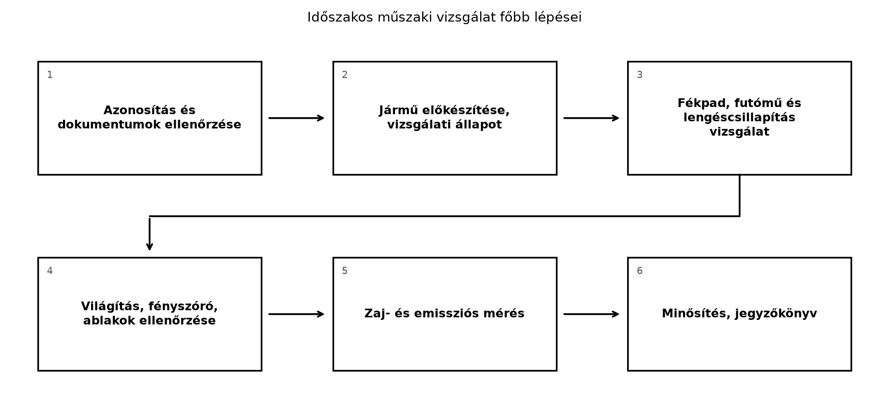

A műhelyben a „tudsz-e vizsgát csinálni?” kérdés általában azt jelenti: ellenőrizd át az autót úgy, ahogyan a vizsgálóállomáson fogják mérni, és találd meg azokat a hibákat, amelyek miatt a jármű esetleg nem kapná meg a forgalmi engedélybe bejegyezhető vizsgaeredményt. Az időszakos műszaki vizsga nem „büntetni akar”, hanem azt hivatott ellenőrizni, hogy a jármű közlekedésbiztonsági és környezetvédelmi szempontból alkalmas-e a forgalomban való részvételre. Szerelőként ezért pontosan értenünk kell, hogyan méri a vizsgálóberendezés a fékhatást, hogyan kell beállítani a fényszóró fény-sötét határát, mit mutat a lengéscsillapító-vizsgáló és a zajszintmérő.
A hibák nagy része nem ritka alkatrészhiba, hanem beállítási, karbantartási hiányosság: rosszul beállított fényszóró, levegős vagy egyik oldalán szoruló fék, túlzottan sötét fólia, elkopott lengéscsillapító. Ha ezeket a vizsgálat előtt felismerjük, elkerülhető a pótvizsga, az ügyfél pedig biztonságosabb autót kap vissza.
Képzeljünk el egy időszakos vizsgálóállomási sort. Az autó először az azonosító fülkébe gurul, ahol rögzítik a rendszámot, az alvázszámot és a jármű adatait. Innen a vizsgálósorra kerül: görgős fékerőmérő próbapad, futómű holtjáték-vizsgáló lemezekkel és világítással, lengéscsillapító-vizsgáló, fényszóró-ellenőrző műszer, zajszintmérő mikrofon. A vizsgabiztosnak nem kell próbaútra mennie; a mérések a teremben, reprodukálható körülmények között zajlanak. A jármű a görgőkön áll, a kerekeit a görgők forgatják, miközben a fékpedálra lépéskor a rendszer rögzíti a fékerőt. A fényszóró előtt optikai fej néz szembe a lámpatesttel, és a fény-sötét határ eltérését mutatja. Minden mérés elektronikus jegyzőkönyvbe kerül, a minősítést a hibakategóriák alapján adják.
Definíció. A hatósági műszaki vizsgálat olyan, jogszabályban meghatározott, feljogosított vizsgálóállomáson végzett ellenőrzés, amelynek során a jármű megfelelőségét mért értékek, szerkezeti vizsgálat és vizuális ellenőrzés alapján minősítik.
Előírás. A közúti járművek forgalomba helyezésének és forgalomban tartásának műszaki feltételeit a 6/1990. (IV. 12.) KÖHÉM rendelet, a hatósági vizsgálat eljárási és méréstechnikai követelményeit a kapcsolódó vizsgálati szabályzatok rögzítik (ellenőrizendő: hatályos jogszabályhelyek, vizsgálati módszertan). Emellett az egyes részvizsgálati módszereket ENSZ-EGB előírások és a típusjóváhagyási keretek is meghatározzák; például a fékkel kapcsolatos megfelelőséget az ECE R13/R13-H, a világítást az ECE R48 és a fényszórókra vonatkozó ECE-előírások pontosítják (ellenőrizendő: előírásszámok és hatályos változatok).
A vizsgálat tárgya a jármű azonosítása, a felszerelések, a világítás, a fékrendszer, a kormányzás, a futómű, a kerekek, a karosszéria, a környezetvédelmi rendszerek, a gumiabroncsok és a zajszint. Az általános technológia mindig ugyanazt a láncot követi: előkészítés → mérés/szemrevételezés → kiértékelés → dokumentálás. A járművet a vizsgálathoz megfelelő állapotba kell hozni: az abroncsnyomás, a terhelés, a folyadékszintek és a beállítható fényviszonyok befolyásolják az eredményt. A vizsgálóállomás a méréseket hitelesített műszerekkel végzi, és a vizsgálati jegyzőkönyvben rögzíti az értékeket.
A minősítés nem egyszerű megfelel/ nem megfelel, hanem hibakategóriákat használ. Az itt bemutatott kategóriák az európai vizsgálati gyakorlatban elterjedtek, de a pontos magyar elnevezést és következményeket a hatályos vizsgálati jogszabályok adják (ellenőrizendő).
| Hibakategória | Jellemző példa (tanulási példa) | Következmény (példa) |
|---|---|---|
| Kisebb hiba | a rendszámtábla-világítás egyik izzója nem működik | a jármű vizsgálat szempontjából megfelelő lehet, de az okmányban megjegyzés kerülhet |
| Súlyos hiba | az egyik kerékfék oldalankénti eltérése a megengedett határ fölé esik | javítás kötelező, a jármű csak pótlólagos vizsgálat után kaphat megfelelőséget |
| Veszélyes hiba | például az üzemi fék egyik körének teljes kiesése, vagy a fékpedál a padlóig lenyomható | a járművet azonnal ki kell vonni a forgalomból, az üzemeltetés tilos |
Az értékek tanulási példák (ellenőrizendő: gyártói adat / hatályos előírás).
A vizsgálati technológiák alább ismertetett lépései a leggyakoribb mérési eljárások; a mérést csak arra jogosult vizsgáló végezheti a hatályos előírás szerint. A tanműhelyi gyakorlatok során ugyanezeket az elveket használjuk fel, de mindig meg kell különböztetni a gyakorló mérést a hatósági jegyzőkönyvezett méréstől.
Az általános vizsgálatsorozatot az alábbi folyamat szemlélteti:

A görgős fékerőmérő a vizsgálóállomás egyik legfontosabb műszere. A jármű kereke a görgőpárra áll; a görgők villanymotorral vagy hidraulikusan hajtják a kereket, és a járműszerelő a fékpedálra lép. A berendezés nem a jármű lassulását méri közvetlenül, hanem a kerékre ható fékezőnyomatékot és az abból származó fékerőt; a kerék és a görgő közötti erőátadás révén a mérőrendszer a féknyereg vagy a dobfék által keltett kerületi erőt érzékeli.
Összefüggés. Ha egy tengelyen a mért összes fékerő , és a tengely statikus tengelyterhelése , akkor az adott tengelyen érvényes fékhatás:
A teljes járműre vonatkozó üzemi fékhatást a tengelyenkénti fékerőösszeg és a jármű súlyereje viszonya adja:
ahol a jármű tényleges vagy megengedett tömege, . A rögzítőfékre ugyanezt az összefüggést használjuk a rögzítőfék által fékezett tengelyre.
Szabály. A görgős vizsgálatnál a járművet rögzített állapotban kell tartani: a kézi rögzítőfék kioldott állapotban van az üzemi fék mérésénél, a sebességváltó üres vagy N állásban van (automataváltónál a gyártói előírást kell követni), és a fékpedált egyenletesen, a vizsgálati eljárásban megadott erővel kell nyomni. A rögzítőfék mérésénél a rögzítőfék fokozatát, a pedálerőt vagy a rögzítőfék karerőt a vizsgálóberendezés folyamatosan figyeli.
A vizsgálóbiztos a mérés alatt figyeli az oldalankénti különbséget, a „lapos” vagy szakaszos fékérzetet, a kerék blokkolását, a görgő megcsúszását, valamint azt, hogy a lassítás egyenletes-e. A kopott, ovális féktárcsa vagy a szennyezett fékbetét jellegzetes lüktető görbét ad, ezért a mérési jegyzőkönyv görbéjének alakját is ki kell értékelni.
A görgős fékpadi vizsgálat technológiai lépései:
Figyelem. A görgős próbapadon a kerekek nagy kerületi sebességgel foroghatnak. A mérés közben a jármű előtt vagy mögött tartózkodni tilos; a járművet a megcsúszás vagy kizuhanás ellen a gyártói/állomási előírás szerint kell biztosítani. A mérést csak feljogosított személy végezheti.
A futómű holtjáték-vizsgáló a kerékfelfüggesztés, a kormányrudazat és a kerékcsapágyak elmozdulásait érzékeli. A járművet a vizsgáló állványra állítják, és a kerekek alatt hidraulikus mozgatású lemezek oldalirányú vagy fékezett mozgásokat végeznek. A szerelő vagy a vizsgabiztos egy alulról megvilágított, gödörből vagy tükörrel ellenőrizhető helyzetből figyeli a csuklók, szilentek és vezetőkarok elmozdulását.
A mérés lényege, hogy a kerék terhelt állapotban, a jármű saját tömegével a lemezen áll; a vizsgálóberendezés a kereket egymás után hossz- és oldalirányban mozgatja. A megengedett játékot a járműtípushoz tartozó gyártói vagy hatósági határérték adja (ellenőrizendő: a vizsgálati határértékek). A vizsgálat során a következőket ellenőrzik:
A játékot milliméterben vagy a vizsgálófej jeléből származtatott elmozdulásértékben rögzítik. A hibakeresésnél a kopogni, csörögni kezdő futómű és a bizonytalan kormányérzet mindig ennél a vizsgálatnál nyer megerősítést; a vizsgáló pad nemcsak a mérésre, hanem a pontos hibahely behatárolására is használható.
Az ábra (a) részén a kerekek a mozgó lemezeken állnak, a vizsgáló az aknából, kézilámpával figyeli a gömbcsuklókat, a kormányösszekötőket és a szilenteket; a (b) rész a lengéscsillapító-vizsgáló padot mutatja (lásd a lengéscsillapítás vizsgálatánál): a rezgőlap a kereket függőlegesen rezegteti, a kijelző kerekenként a kerékterhelés-arányt adja.
A fényszóró vizsgálata optikai fejjel, úgynevezett fényszóró-ellenőrzővel történik. A berendezés a tompított fény fény-sötét határának helyzetét méri; a távolsági fény fényerősségét és a szimmetrikus fénykéve középpontját külön mérheti. A fényszóró beállításakor nem a megvilágítás szubjektív érzékelésére hagyatkozunk, hanem a vetített határvonal geometriájára.
A mérőhenger vagy kamera a fényszóró előtt, a fényszóróval azonos magasságban, egymáshoz képest párhuzamosan lett elhelyezve. A járművet előkészítve, a gyártó által megadott terhelési állapotban, előírt abroncsnyomással, a fénymagasság-állító kapcsolót a megadott helyzetbe állítva mérik. A hatósági vizsgálatnál a jármű terheletlen, a gyártói beállítási értékek szerint, a gyártó által megadott dőlés-százalékot kérik (ellenőrizendő: a gyártói érték, jellemzően 1,0–1,5 % lefelé).
A mérés során a fényszóróból kilépő fénykéve a műszer ernyőjére vetül. Az aszimmetrikus tompított fénynél a vetület bal oldala vízszintes, a jobb oldala emelkedő szakasszal rendelkezik; a mérőműszer a vízszintes és az emelkedő szakasz metszéspontját (a fény-sötét határ „könyökét”) érzékeli. A kamera tájolásával biztosítjuk, hogy a mérés merőleges legyen a fénykéve tengelyére. A beállító csavarokon azután úgy állítunk, hogy a metszéspont a gyártói dőlés és a vízszintes eltérés nulla vagy megengedett tartományon belül legyen.
A fényszóró-ellenőrző mérés lépései:
Figyelem. Az erős fényű fényszóróba hosszan belenézni tilos; a beállítást jól szellőző, pormentes helyen végezzük. Xenon- vagy LED-rendszernél a beállítás előtt a gyártói utasítást követve ellenőrizni kell, hogy a szintezőrendszer működőképes; a fényszóró belső nagyfeszültségű elemét csak feszültségmentesítés után szabad cserélni. A hatósági vizsgálatnál a fényforrás típusának meg kell egyeznie a lámpatest típusjóváhagyásával.
Az ábra (a) része a dőlés jelentését mutatja: a dőlés százalékban a süllyedés és a távolság hányadosa, tehát 10 m-en 12 cm, 25 m-en 30 cm süllyedést jelent. A (b) rész a mérőernyő képe: a fény-sötét határ bal oldala vízszintes, a jobb oldala 15°-ban emelkedik, a mérés a kettő metszéspontját, a „könyököt” keresi; a szürke sáv a tanulási példában megengedett … tartomány (ellenőrizendő: gyártói érték). A HTML-változatban a dőlés és a vízszintes eltérés csúszkával állítható.
A jármű lengéscsillapítóit a hatósági vizsga során speciális vizsgálópadon ellenőrzik. A lengéscsillapító-vizsgáló a kereket a hordozólemezen át periodikus függőleges gerjesztésnek teszi ki, és a kerékfelfüggesztés által visszadott erők arányát, a kerék talajnyomás-ingadozását méri. A gép a kerék tapadási értékét (%) és a tengely bal–jobb oldala közötti különbséget adja; minél nagyobb a tapadási érték, annál jobban tartja a csillapító a kereket az úton (határérték: ellenőrizendő). A vizsgálat a rugó és a csillapító együttes működését mutatja, ezért az eredmény akkor is rossz lehet, ha például a gumiabroncsnyomás nem megfelelő, vagy a kerék kiegyensúlyozatlan.
Szabály. A vizsgálópad mellett a lengéscsillapítót mindig el kell végezni a járművön egy rövid kézi billegtetéses próbával is. A járművet a sarkoknál erősen megnyomva elengedjük, és figyeljük, hogy a karosszéria legfeljebb egy-két csillapodó mozdulat után nyugalomba kerüljön; a folyamatos, hintázó mozgás kopott csillapítóra utal. A pad által jelzett rossz értéket ki kell egészíteni a csillapító szivárgásának, kopásának, a rugó törésének és a felső lengéscsillapító-támasz állapotának ellenőrzésével.
A szélvédő, valamint az első ajtók oldalüvegei fényáteresztő képességét fényáteresztés-mérővel (transzmisszométerrel) mérik. A műszer két egységből áll: az egyik oldalon a fényforrás, a másik oldalon a fényérzékelő; az üveg közé kerül, és a mérőszám az átengedett fény arányát adja százalékban.
Előírás. A szélvédő és az első oldalüvegek fényáteresztése csak a gyárilag megengedett mértékig csökkenthető. Magyarországon a szélvédőn és az első oldalüvegeken semmilyen sötétítő fólia nem engedhető, ha a fényáteresztés a megadott határ alá csökken (a gyári homológ üveg értékét gyárilag jelölik; az ellenőrzési határérték jellemzően 70–75 %, ellenőrizendő: a hatályos jogszabályi határérték). A hátsó oldalüvegek és a hátsó szélvédő fóliázása megengedett, de a járműnek rendelkeznie kell megfelelő visszapillantó tükörrel (ellenőrizendő).
A mérésnél az üvegnek száraznak, tisztának kell lennie; a mérőfejet merőlegesen kell az üvegre helyezni. A vizsgálat előtt ellenőrizzük, hogy a fólia nem tartalmaz-e buborékot, karcolást vagy leválást, mert ezek a fényáteresztést rontják. A mérést, ha lehet, fedett, állandó hőmérsékletű helyen végezzük.
A jármű zajkibocsátását álló járművön, közeltéri módszerrel mérik, hogy a motor és a kipufogórendszer zajhatását ellenőrizzék. A méréshez hitelesített zajszintmérőt és az előírás szerinti mikrofonállványt használnak. A mérési pont a kipufogó nyíláshoz képest meghatározott távolságra és szögben helyezkedik el, például a kipufogó nyílástól 0,5 m-re, a kipufogó magasságában, 45°-os szögben (ellenőrizendő: a hatályos mérési módszertan pontos geometriája). A mérési feltétel nagyon fontos: a jármű motorja üzemi hőmérsékleten van, a motor fordulatszámát a gyártói előírás vagy a vizsgálati módszertan által megadott értékre, például a maximális teljesítmény fordulatszámának 75 %-ára emelik és stabilizálják, majd a gázpedált hirtelen elengedik; a műszer a lassulás alatti legnagyobb A-súlyozott szintet rögzíti (ellenőrizendő: ECE R51/R41, a pontos fordulatszám- és időfeltételek).
A zajszintet A-súlyozással mérik, ezért a mértékegység dB(A). A mérések számát és kiértékelését (átlag vagy legnagyobb érték) a hatályos előírás adja (ellenőrizendő: ECE R51/R41, vizsgálati módszertan); a példában két mérést végeznek, és energiaátlagot számítanak. A zajszintmérő eredményét összehasonlítják a jármű forgalmi engedélyében szereplő, típusjóváhagyásból származó zajhatárértékkel, vagy a jármű korosztálya szerinti hatósági határértékkel. A határértékek egy-egy kategóriánál szigorodtak az évtizedek során; a pontos értéket a hatályos előírások és a jármű okmányai tartalmazzák.
Cél: A vizsgára felkészítő fényszóró-ellenőrző mérés és beállítás elvégzése tanműhelyi személyautón.
Jármű- és adatazonosítás: Rögzítsük az alvázszámot, a forgalmi engedélyben szereplő világítás- és fényforrás-adatokat, a gyártói beállítási értéket (pl. fényszóró dőlés, terhelési állapot, fénymagasság-állító pozíció; ellenőrizendő: gyártói javítási adat).
Szükséges szerszámok, mérőeszközök, anyagok: fényszóró-ellenőrző műszer vagy hitelesített optikai fej, keréknyomás-mérő, tisztítókendő, vízszintes padlófelület, esetleg mérőszalag, védőkesztyű.
Biztonsági korlát. A feladat tanműhelyi környezetre, oktató felügyeletére és a gyártói javítási utasítás betartására vonatkozik; a megadott értékek tanulási példák.
Munkalépések
Ellenőrzési pontok: mindkét fényszóró fény-sötét határának függőleges dőlése a gyártói tűrésen belül (például és között, ellenőrizendő), vízszintes eltérés közel nulla, távolsági fény működik, a világítás jelzései nem hibásak.
Egy vizsga előtti átvizsgálásra érkező autó tulajdonosa arról panaszkodik, hogy a bal fényszóró „nagyon magasra világít”, és a vizsgán egyszer már visszadobták fékerő-különbség miatt. A műhelyben a fényszóró-mérő a bal oldalon felfelé dőlést mutat, a jobb oldalon lefelé dőlést; ez a bal fényszóró vakításához vezet. A fénymagasság-állító kapcsoló nem gyári, a használati utasításban előírt fokozatra állítva a bal oldal továbbra is magas. Kiderül, hogy a bal oldali lámpatest tartókerete törött, ezért a csavarhiány miatt a lámpa felfelé áll. A törött tartót cserélik, majd a fény-sötét határt a gyártói előírás szerint újra beállítják; a fékerő-mérés az egyik hátsó dob fék egyenlőtlenségét mutatja, amit a fékdob és a betétek cseréje után a görgős padon ellenőriznek. A jármű így már megkapja a vizsgaérvényesítést, és az ügyfél is elégedett a biztonságos fénykévével.
1. feladat (A) Fogalmazd meg, mit jelent a fékhatás a görgős fékerőmérőn mért értékekből, és írd fel a képletét.
2. feladat (A) Egy személyautó tömege 1 250 kg. A görgős padon az első tengelyen mért összes fékerő 4 800 N, a hátsó tengelyen 1 800 N. Számítsd ki a teljes járműre vonatkozó fékerőt és az üzemi fékhatást.
3. feladat (B) Egy vizsgálati jegyzőkönyv szerint a bal első kerékfék maximuma 2 100 N, a jobb első kerékfék maximuma 1 850 N ugyanazon tengelyen. Számítsd ki az oldalankénti különbséget a nagyobb fékerő százalékában! (A megengedett különbség tanulási példa: 25 %, ellenőrizendő.)
4. feladat (B) A fényszóró-ellenőrző mérésnél a bal fényszóró vízszintes eltérése jobbra, a függőleges dőlése . A megengedett vízszintes eltérés példaként , a megengedett függőleges dőlés és között van. Minősítsd a mérési eredményt!
5. feladat (C) A zajszintmérő két mérést rögzített: és . Számítsd ki a két mérés energiaátlagát dB(A)-ben! (Segítség: az energiaátlag .)
6. feladat (D) A vizsgán az ablak fényáteresztését mérő műszer a szélvédőn 62 %-ot mutat, az első oldalüvegen 68 %-ot, a hátsó szélvédőn 81 %-ot. A gyári ablakok jelölései alapján a szélvédő gyári értéke 75 %, az első oldalüveg 70 % (ellenőrizendő: pontos határértékek). Mi lehet a hiba oka, és mit tanácsolsz a vizsgára? Indokold a minősítés előtti teendőket!
Önellenőrzés – válaszok
Megoldások – feladatok
A tengelyen mért összes fékerő és az ugyanazon tengelyre jutó statikus tengelyterhelés hányadosa: Ez a mutató azt mutatja, hogy a fékrendszer mekkora fékezőerőt képes adni az adott tengely terheléséhez képest; a teljes járműnél a teljes fékerőt a jármű súlyerejéhez viszonyítjuk.
A teljes fékerő: A jármű súlyereje: Az üzemi fékhatás: Az 53,8 % a régebbi M1 járművekre vonatkozó 50 %-os határt teljesíti, a később forgalomba helyezett M1-re vonatkozó 58 %-ot nem (ellenőrizendő: 2014/45/EU II. melléklet, hazai vizsgálati előírás). A minősítéshez tehát a jármű forgalomba helyezési idejét és a viszonyítási tömeget is ismerni kell.
Az oldalankénti különbség a nagyobb fékerőhöz viszonyítva: Ez a 25 %-os példa-határ alatt van, tehát a különbség megengedett lehet; de a vizsgálóberendezés a lüktetést és a bemelegedési görbét is figyeli, ezért a 11,9 % önmagában még nem zárja ki a betétproblémát.
A vízszintes eltérés jobbra, ami a példatűrésen belül van. A függőleges dőlés , ami a … tartományba esik. A mérési eredmény a példahatárok szerint megfelelő. Ha a jármű tényleges gyártói előírása eltér, akkor azt kell alkalmazni.
Először a lineáris energiákat számítjuk: Az átlaguk: Vissza dB-be: Tehát az energiaátlag kerekítve 78,0 dB(A).
A szélvédő 62 %-os értéke a gyári 75 %-os értékhez képest jelentős csökkenés; az első oldalüveg 68 %-a a gyári 70 %-hoz képest is határ körüli vagy alatti. A hiba oka általában utólagosan felszerelt sötétítő fólia, vagy erősen szennyezett, karcos üveg. A vizsga előtti teendő: tisztítsuk meg az üvegeket, és ha fólia van rajta, mérjük meg újra; ha a szélvédő vagy az első oldalüveg a megengedett határ alatt marad, a fóliát el kell távolítani, vagy a gyártói előírást kell követni. A jármű csak a megengedett fényáteresztés elérése után vizsgáztatható.
A hatósági vizsgálat során a járművet hitelesített műszerekkel mérik, és a hibákat kategóriákba sorolják; a súlyos vagy veszélyes hiba javítást és pótvizsgát vagy a jármű kivonását vonhatja maga után. A görgős fékerőmérőn a tengelyenkénti fékerőt mérik; a tengelyenkénti fékhatás , a teljes járműre . A fékvizsgálatnál figyelni kell az oldalankénti különbségre és a fékerőgörbe lüktetésére. A fényszóró-ellenőrző a fény-sötét határ vízszintes és függőleges helyzetét méri; a beállítást a gyártói dőlés szerint, a jármű előkészítése után kell elvégezni. A lengéscsillapító-vizsgáló tapadási értéket ad, de a kézi billegtetéses próba és a szemrevételezés is szükséges a hibabehatároláshoz. Az ablak fényáteresztését transzmisszométerrel mérik; a szélvédőn és az első oldalüvegen a határ alatti fényáteresztés vizsgahiba. A zajszintmérést meleg motornál, meghatározott fordulatszám-protokollal, A-súlyozással végzik, és a mért értéket a járműre érvényes határértékhez hasonlítják. Továbbvitt eredmény. A fent bemutatott résztechnológiákat az Környezetvédelmi felülvizsgálat, tanúsítvány és a jármű felkészítése a műszaki vizsgára alfejezetben a teljes vizsgafelkészítés, a Fékberendezések diagnosztikai és hatósági vizsgálata alfejezetben pedig a fékrendszer célzott diagnosztikája használja fel; a görgős pad mérésének kiértékelése különösen fontos a fékhibák behatárolásánál.
Forrástípusok: a hazai hatósági vizsgálati jogszabályok (6/1990. (IV. 12.) KÖHÉM rendelet és kapcsolódó vizsgálati módszertani előírások), az ENSZ-EGB előírások (ECE R13/R13-H fék, ECE R48 világítás, a fényszórókra és a zajra vonatkozó előírások), gyártói javítási/beállítási adatok, valamint a vizsgálóberendezések kezelési útmutatói. Az alábbi adatok kiadás előtt célzottan ellenőrizendők: